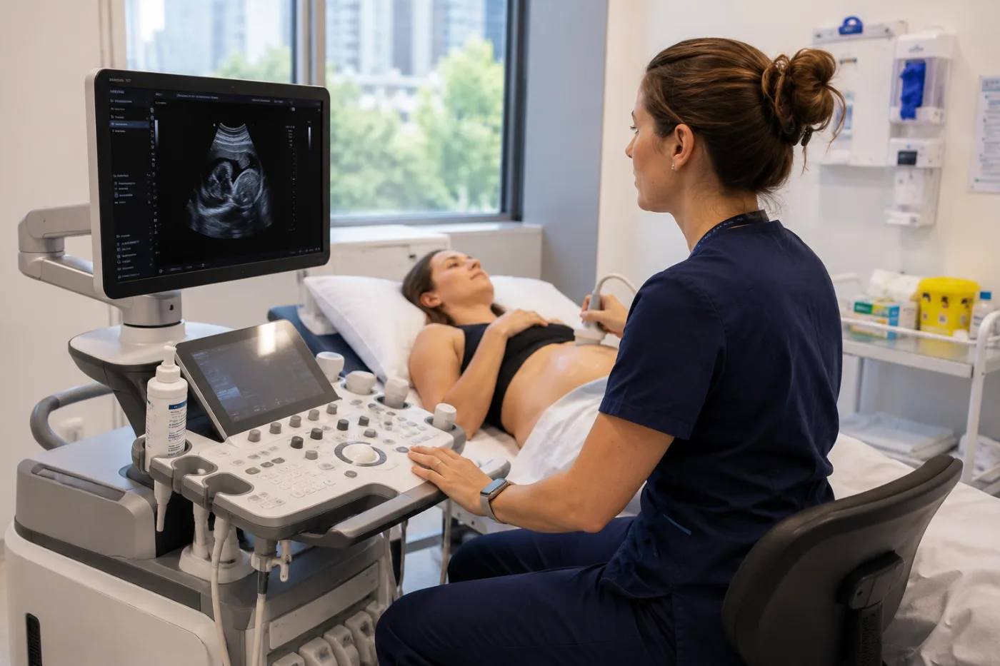

Career guide · Sonography · New Zealand
Sonography, with autonomy and adventure.
Very high demand, autonomous scanning, and a life beyond the department.
RegistrationMedical Radiation Technologists Board
PathwayGreen List Tier 1 — straight to residence
Right nowSee current roles
Roles · New Zealand
Current opportunities
Roles we're recruiting for right now. If none is quite right, register your interest and we'll be in touch when something fits.
Essential
What actually matters, in five minutes
Seven questions that decide whether this move is worth exploring — answers first. The full detail sits one click below, and nothing has been removed.
Can I work there?Yes — with MRTB sonography registration
You register with the Medical Radiation Technologists Board under the sonography scope and hold an Annual Practising Certificate. Sonography is a protected scope, so every application is assessed individually against the New Zealand standard for the scope you apply under. Note that sonography sits outside trans-Tasman recognition — Australian-qualified sonographers apply as overseas-trained. The Board decides, not us.
Check my pathway →What could I earn?Circa NZ$116,000–$162,000
Indicative public range on the 11-step APEX scale, read from the signed agreement; reporting sonographers sit on their own higher scale, indicatively circa NZ$127,000–$173,000. Some services sit on a PSA agreement instead. Private imaging is outside the collective agreements, so there is no scale to check against — we ask the employer and get it in writing.
How pay is set →Where are the jobs?One of the deepest shortages
Sonography is on the Tier 1 Green List, with a Straight to Residence pathway, and it is actively recruited nationwide — public radiology and cardiology departments and private imaging networks, in the main centres and the provinces alike.
See current roles →What will the work be like?Autonomous scanning
Broad diagnostic ultrasound with real independence at the machine — abdominal, obstetric and gynaecological, musculoskeletal, vascular and small parts — with room to go deep on a sub-speciality. Cardiac sonography is its own MRTB scope rather than a rotation.
The work itself →Can I bring my family?Yes — and residence is quicker here
The Green List residence route brings partner work rights and schooling for children with it. Schools, childcare and the family logistics are explained once, properly, in the family guide.
Family moves, explained →What will moving cost?Budget for real fees
Board registration NZ$922 plus NZ$510 for the first practising certificate, qualification verification, visa fees for everyone moving, flights and shipping. Some employers contribute to relocation, some don’t — we get whatever is offered in writing.
The move, costed →How long could this take?Months, not weeks
Registration and the visa run largely in parallel, and because each sonography application is assessed individually, document verification and evidence of recent scanning practice are usually the slow part. Start collecting that evidence early.
The journey, sequenced →Want the detail? Dig deeperWhy New Zealand, registration in full, scope and sub-specialities, how pay is set, what we can’t promise and the FAQs — everything, one click down.

Why New Zealand
Autonomous scanning, a broad scope, and a country built for living
Sonographers are among the most sought-after health professionals in New Zealand — a sustained shortage across general, obstetric, vascular, musculoskeletal and cardiac ultrasound, rural to tertiary. The work is autonomous, and the pay is among the strongest in allied health.
- Very high demand, nationwide
- Autonomous scanning and a broad clinical scope
- Tier 1 Green List — straight to residence
"The scanning is excellent. So are the weekends."
Getting registered
Registration overview
Reviewed July 2026 · checked against the Medical Radiation Technologists Board’s current published guidance
To practise as a sonographer in Aotearoa you'll register with the Medical Radiation Technologists Board (MRTB) under the sonography scope and hold a current Annual Practising Certificate (APC). Sonography is a protected scope — every application is assessed individually.
Your qualifications and experience are assessed for equivalence to the New Zealand standard for the scope you apply under — general sonography, or a sub-speciality scope such as cardiac sonography (echocardiography). You'll typically need:
- Verification of your sonography qualification
- Evidence of recent clinical practice
- Certificates of good standing & criminal-history checks
- Confirmation of English-language proficiency, if required
Pathways into registration
Your route depends on where you trained and how closely your experience aligns with the New Zealand sonography standard.
Internationally Qualified pathway
For sonographers trained outside New Zealand and Australia (including the UK). Your qualification and experience are assessed for equivalence to the relevant sonography scope.
Trans-Tasman & scope-specific
Australian-qualified sonographers apply as overseas-trained; cardiac and other sub-speciality applicants are assessed against the specific scope they intend to practise in.
Everything in one place
Your registration resources, all on one page
Read the Board's own registration guide, work through the checklist, then go straight to the people who register you.
Registration application guideEthicare guideRegistration checklistEthicare guideMedical Radiation Technologists BoardOfficial registration website
Prefer a download? Registration guide (PDF) · Checklist (PDF)
Registration checklist
What to gather before you apply to the MRTB:
- Certified copies of your qualifications
- Evidence of recent, relevant clinical practice
- A certificate of good standing from every authority you’ve registered with
- A police / criminal-history check
- Proof of identity, plus any name-change documents
- English-language evidence (IELTS or OET), if required
- One personal and one professional referee
- Your application fee, ready at submission
Advice & notes
Start early
Gathering documents before you apply is the single best way to avoid delays. Missing paperwork is the most common hold-up.
Mind the dates
Certificates of good standing and certified copies have a short validity window. Time them so they are still current when you submit — and note the Board’s window and Immigration New Zealand’s are not the same.
Then your visa
Your visa follows the job offer, not the other way round. We’ll guide the order so nothing happens out of sequence.
You’re not on your own
We’ll review your documents with you before you submit, and stay alongside you through every step.
Scope of practice
General, cardiac and reporting
Sonography is a protected MRTB scope. Most sonographers work autonomously across a broad case mix; many focus around one or more sub-specialities while keeping general scanning.
General sonographer scope
Abdominal, obstetric, gynaecological, musculoskeletal, vascular and small-parts scanning.
Cardiac sonography (echocardiography)
A distinct MRTB scope — transthoracic, transoesophageal and stress echo. Needs a recognised echo qualification such as a DMU or PGDip/MSc Echo.
Reporting & advanced practice
Their own higher salary scale rather than the top of the general one — a genuine career ladder.
Salary & benefits
Among the strongest pay in allied health
Sonography is one of the best-paid roles in allied health here, and reporting work pays better again. Figures are indicative — we’ll confirm your actual number for a specific role before you decide anything.
Salary (APEX, public)
NZ$116,000–$162,000
Indicative 11-step APEX public scale, read from the signed agreement (rates effective 1 July 2025). Reporting sonographers sit on their own higher scale, indicatively NZ$127,000–$173,000.
Salary (PSA agreement)
Alternative scale
Indicatively NZ$102,000–$138,000 on an 11-step scale, depending on the employing service.
Allowances
On top of base
Overtime and penal rates, higher-duties and night-shift allowances, plus on-call provisions.
Relocation
Varies by employer
Some employers contribute towards the move, others don’t. We ask on your behalf and get whatever is on offer confirmed in writing before you decide.
Visa & residence
Tier 1 Green List
Straight to Residence pathway, with partner work rights and schooling for children.
Leave & cover
4–5 weeks + APC
Four weeks' leave (five after five years), sick leave, public holidays; APC usually reimbursed once you start.
These are public-system figures. Private imaging sits outside the collective agreements and sets its own rates, so there is no scale to check a private figure against — we ask the employer directly and get it in writing. Public pay is confirmed against the relevant APEX or PSA agreement for each role; figures are indicative, rounded down to the nearest thousand, and change year to year. View the APEX collective agreements →

Sophie's take
Sonographers are some of the most fought-over health professionals on both sides of the Tasman — so the real question isn't whether you'll be wanted, but what kind of working life you want.
What surprises people is how strong New Zealand's public pay is for this profession — among the best in allied health, with reporting roles higher still. Add Tier 1 straight-to-residence and a broad, autonomous case mix, and it's one of the best moves a sonographer can make.
Tell me the life you want — a cardiac sub-speciality, a regional lifestyle role, more time at the weekend — and I can usually find a sonography role to fit it, rather than the other way round.
SophieCEO & Founder, Ethicare Resourcing
The honest bit
What we can’t promise
A move this size deserves the limits as well as the pitch. Three things you’ll never hear us guarantee — and what we do instead.
Timelines that aren’t ours to give
Registration sits with the Medical Radiation Technologists Board and visas with Immigration New Zealand. We’ll give you the realistic range, keep your file complete and moving, and chase what can be chased — but we won’t quote a faster number just to win you over.
A specific job in a specific suburb
Vacancies move. If your heart is set on one workplace in one corner of one city, we’ll tell you honestly how long that wait could be — before you resign anything, not after.
That the move is right for you
Some moves shouldn’t happen. If the scope, the pay maths or the family logistics don’t stack up, we’ll say so plainly. We’d rather lose a placement than see you land in the wrong life.
Compared · Australia and New Zealand
The profession is the same. The system around it isn’t.
Sonography is where the two countries diverge most sharply, starting with the fact that only one of them regulates the title.
New Zealand registers sonographers as a health profession with a protected scope. Australia does not regulate the title; professional recognition and an accreditation register govern who can scan and whose scans attract funding. That one difference shapes the paperwork before you arrive, who can employ you, and how much say you have over your own practice once you are there.
Registration is a separate process in each country — never assume one follows from the other. The full comparison sits in Australia or New Zealand?, and the money side in Where will your salary go further?
The rest of the move
Everything that isn’t about your profession
Visas, how the countries compare, where in the country to live, and the eight stages from first conversation to first shift. We cover each of those once, properly, rather than repeating them on every role page.
Common questions
Frequently asked
Will I be asked to sit an exam?
Sometimes — sonography is the scope where it's most likely. There's no exam if the MRTB assesses your qualification as equivalent; if not, you're offered the Board's online examination as your pathway. We'll help you gauge the likelihood from your specific qualification.
Which scope do I register under?
The one that matches your training — general sonography, or cardiac sonography (echo), which needs a recognised echo qualification. We'll help you target the right one.
Will I be supervised when I start?
Possibly — overseas-qualified sonographers may begin under provisional registration with a period of supervised practice. In such a short-staffed profession it's usually straightforward to arrange.
How does it compare to Australia?
Unusually for allied health, New Zealand's public sonographer pay is genuinely competitive, so the 'Australia pays more' rule doesn't really apply. Australia offers bigger private volumes; New Zealand offers autonomy, Tier 1 residence and real choice of location.
Nau mai, haere mai · If you’re weighing it up
We'll be with you throughout
Relocating to a new country can feel overwhelming at times, and you won't be doing it on your own. Tell us where you trained and what you're weighing up, and we'll help you think it through.
Ethicare Resourcing · your guide to a life and career in New Zealand.